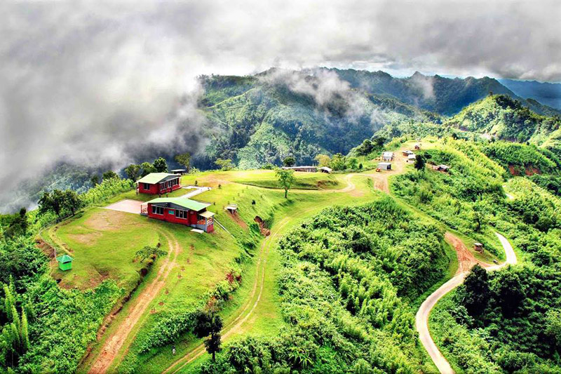

Saint Martin: St. Martin is generally known as “Narikel Zinzira” in Bengali, means 'Coconut
Island’ and this is the only coral reef island in Bangladesh. It is a small island in the north
eastern part of the Bay of Bengal,  created the
southernmost part of our country. It is about 8 km west of the northwest coast of Myanmar, at the
mouth of the Naf River. It is only 8 sq. Kilometre in size. Experts separate this island into three
parts. Northern part is called Narikel Jinjira. It is 2. 134 km long and 1, 402 m wide. The southern
part is called Dakkhin Para by the local and its length and width are successively 1929 m and 1890
m. The middle part which known as Maddhapara locally. The length and width respectively 1524m and
518m.The island is very much ingenious with vast biological variety such as existing fauna and flora
Coral, Mollusk, Fish, Amphibian, Turtle, Snail, Bird and Mammals. Besides above coconut tree is the
important cash crop.
created the
southernmost part of our country. It is about 8 km west of the northwest coast of Myanmar, at the
mouth of the Naf River. It is only 8 sq. Kilometre in size. Experts separate this island into three
parts. Northern part is called Narikel Jinjira. It is 2. 134 km long and 1, 402 m wide. The southern
part is called Dakkhin Para by the local and its length and width are successively 1929 m and 1890
m. The middle part which known as Maddhapara locally. The length and width respectively 1524m and
518m.The island is very much ingenious with vast biological variety such as existing fauna and flora
Coral, Mollusk, Fish, Amphibian, Turtle, Snail, Bird and Mammals. Besides above coconut tree is the
important cash crop.
Sajek: Surrounded by the hills of Mizoram on the east and Tripura on the north, Sajek Valley that once witnessed insurgencies now showcases Bangladesh's cultural diversity engaging people of different ethnicities in developing tourism  in the area for their economic benefit and social uplifting.The river Sajek demarcates the boundary between Bangladesh and India while the area named after it is the biggest union of the country and falls under Baghaichori upazila in Rangamati hill district.Located 95 km north of Rangamati, Sajek is only 67 km north-east of the headquarters of Khagrachhari hill district. Driving through the high peaks and falls of the road one can reach from Khagrachhari to Sajek Valley in about two to three hours.